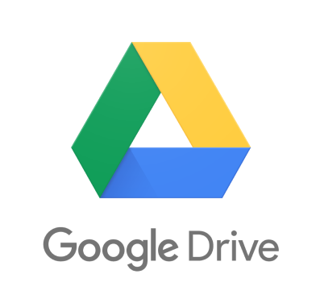
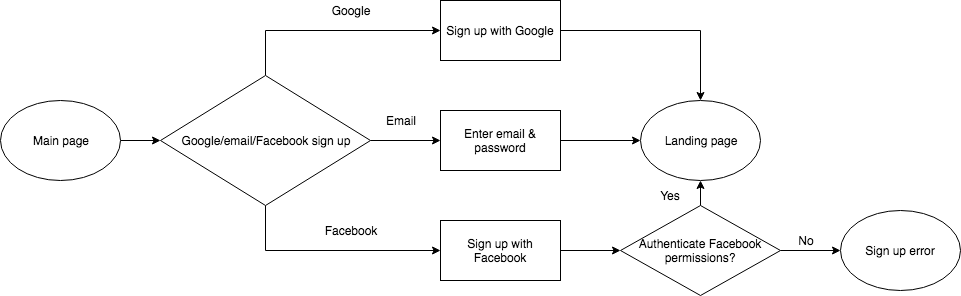
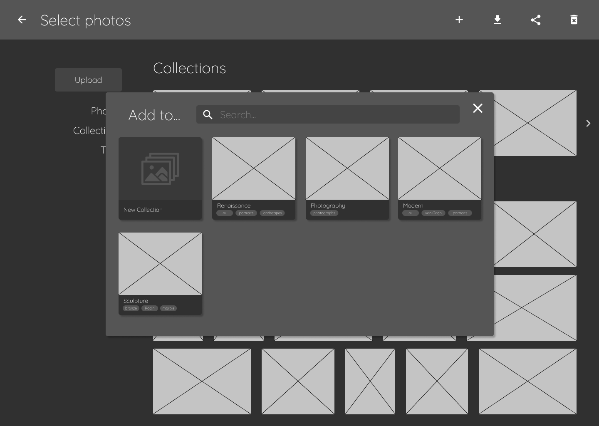
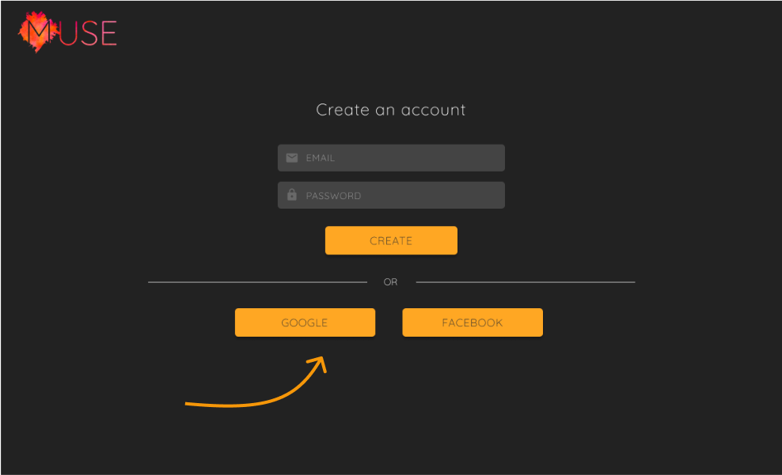
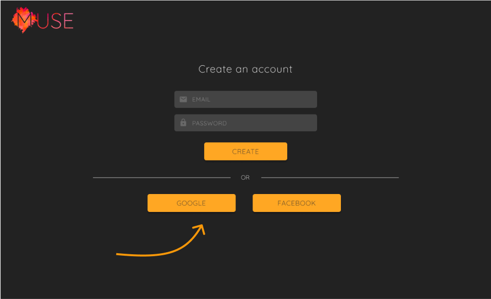
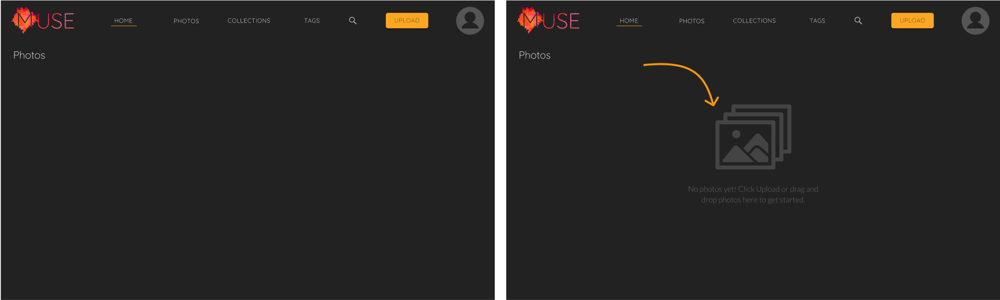
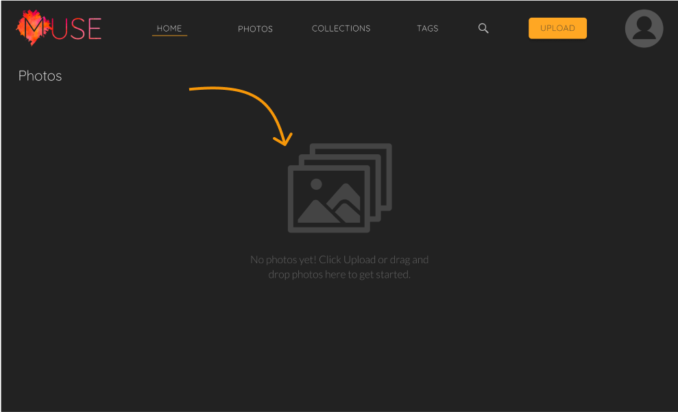
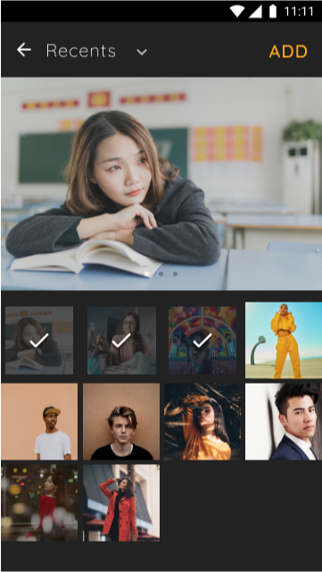
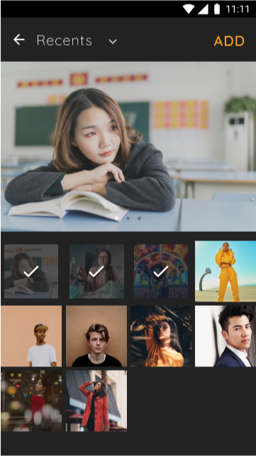

MUSE
Muse a high-quality photo sharing and organization app that has wide-ranging uses. It’s perfect for museums that want to digitize their collections, photographers who need to showcase their work, or just people who have way too many photos sitting in their phone archives.

Roles |
Deliverables |
Tools |
|---|---|---|
| Research | Wireframes | Pen and paper |
| Design | Hi-fi mockups | Figma |
| Branding | Clickable prototypes | InVision |
| Testing | Brand assets |
The Problem
There have been a number of cloud storage services gaining prominence in the past several years, like Google Drive or Dropbox, but these services are generalized and better utilized for file sorting and sharing. Photo-sharing apps like Instagram and Pinterest have a narrower focus, but lean heavily towards the social media aspect and don’t provide high-quality photo storage and organization tools.
The Process
Research and Discovery
The first step in this process was to gather crucial background information. I crafted a survey that would determine which cloud storage apps people used the most, what features the liked the best, and what their biggest frustrations were. I also wanted to gauge how interested people would be in a photo organization/sharing app, and collected responses from people across all genders, age groups, and professions.
Key Takeaways:
- Respondents were most frustrated with price, storage space limitations, and quality limitations (e.g., photo resolution)
- Users wished for better organizational tools
- 63% reported having various amounts of difficulty in organizing their personal photos and would like a single platform to organize and share them
Competitive Analysis
Out of all the cloud storage services on the market, Google Drive is the most cost-effective and has many native apps for creating content, such as Docs and Sheets. It also boasts robust real-time collaboration features, but since its launch, users have found the interface difficult to navigate. Dropbox is great for businesses and is better at integrating content from the web, but has fewer ways to create content and has also suffered from security concerns over the years.
User Personas
I made two user personas to represent real-world users with varying desires and frustrations: Marisol Lee and Gus Menendez.


User Stories
Next, I developed user stories in order to visualize what different users would want to accomplish. These were from three different perspectives: a new user, a returning user, and all users, and ranked in importance of high, medium, or low.

User Flows
With all this information in hand, the user flows covered onboarding, uploading a file or folder, organizing a group of photos into a collection, sharing photo(s) or collections, and setting up a folder to sync with. Figuring out the details of these processes is an important step in determining scope.



Wireframes
The next step was to create wireframes for each screen in the user flow. These were first drawn by hand, then tweaked in Figma.
User Testing - Round One
Users were tasked with creating an account, uploading a photo, and organizing a few photos into a collection. The basic tasks were completed with largely few issues, but some suggestions cropped up throughout the testing. The dashboard was rearranged to be more efficient, and a “Home” link was added to the navbar.

Branding
Once the wireframes were done, I turned my focus to the branding. At heart, I wanted Muse to be clean and sleek, so as to better showcase the images. I also wanted the product to be approachable and attract people for whom art or museums “just aren’t their thing.” With a predominantly calm, dark grey background, the logo needed to stand out, so I overlaid whole logo on a vibrant watercolor texture so it would be more dynamic.


Hi-Fi Mockups
High-fidelity mockups were created in Figma to show what the finished product would actually look like. These mockups followed the patterns in the style guide to keep a consistent feel throughout the product.

User Testing - Round Two
Of course, the finished mockups had to undergo another round of user testing to determine if we’d actually accomplished all the high importance user stories. Basic tasks were easy enough to complete, but button styles were changed to something that would be less overwhelming and the picture selection process was made clearer. Help text was also added to an empty dashboard for first-time users to guide them through getting started.
 



 
